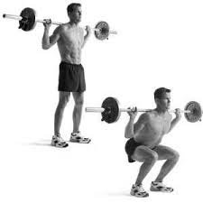
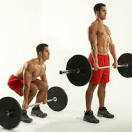
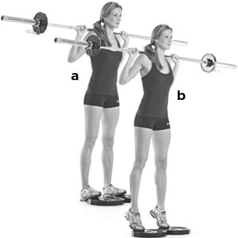

Training the legs is one of the most hated workout areas as the legs require the most effort to workout. Most of the exercises can be done without the use of a machine, here are the best exercises to do for leg training.
Squats - have the bar resting across the back of your shoulders, lower yourself until you're crouching, pause for 3 seconds and push yourself back up
Deadlifts - stand behind the barbell with your legs shoulder width apart, keeping a straight back, bend down to pick the bar up, keep your arms straight and lift the bar using your legs
Calf raises - this can be done by holding weights or just using your body weight, using your toes as an anchor, lift your heels off the ground, pausing for 3 seconds, then repeat
